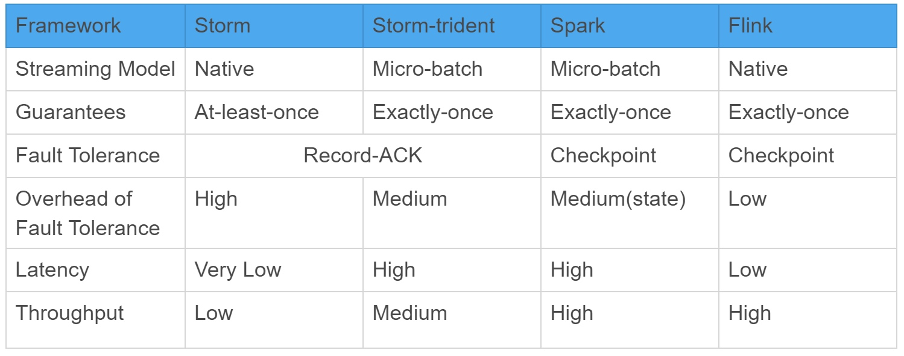
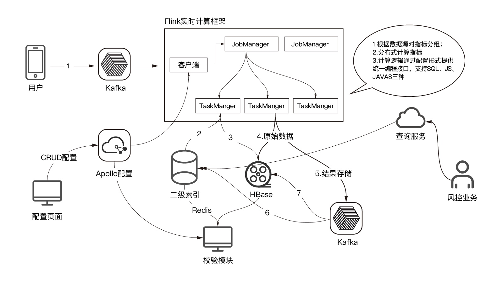
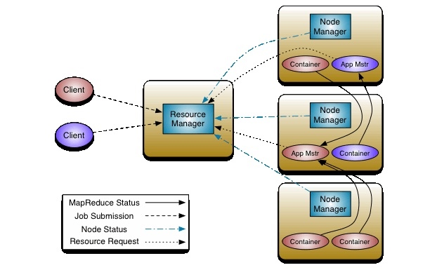

原文地址 https://www.infoq.cn/article/wIwa7N6sFBR4QV-ScOgO
在大数据时代，金融科技公司通常借助消费数据来综合评估用户的信用和还款能力。这个过程中，某些中介机构会搜集大量的号并进行 “养号” 工作，即在一年周期里让这些号形成正常的消费、通讯记录，目的是将这些号 “培养” 得非常健康，然后卖给有欺诈意向的用户。这类用户通过网上信息提交审核，骗到贷款后就 “销声匿迹” 了。
那么，如何更快速地预防或甄别可能的欺诈行为？如何从超大规模、高并发、多维度的数据中实现在线实时反欺诈？这些都是金融科技公司当下面临的主要难题。针对这些问题，InfoQ 专访玖富集团，揭秘基于 Flink 的超大规模在线实时反欺诈技术是如何快速处理海量数据并打造良好的用户体验。
一、在线实时反欺诈的难点和痛点
有三类常见的金融欺诈场景：一是材料伪造。这是早年需要提交纸质材料时期常见的欺诈；二是 “养号”，常见于中介机构，通过收取服务费来维护大量号的健康状态，卖给有欺诈意向的用户进行贷款申请；三是来自于专业黑客的威胁，他们通过寻找系统、流程的漏洞等方式，对账号安全构成攻击。
金融科技因其虚拟性特征，主要风险集中在两方面：一是欺诈风险，二是信用风险，因此核心的风险评估流程就是反欺诈和信用评估。对于反欺诈而言，信息核实、高危人群拦截和实时计算、识别、决策是其核心风控手段。而对于信用风险的评估，需要内外兼修。
玖富集团对用户的信用评级主要由玖富集团自主研发的火眼评分 - 彩虹评级系统动态评估用户信用情况，覆盖玖富集团 C 端全线借贷服务，自上线以来表现稳定，区分效果明显。外部也参考了腾讯、阿里等评分作为参考。
目前，在线实时反欺诈会面临各类痛点，在玖富集团业务场景中，主要痛点集中在以下三方面：
一是低延时要求。越是大量数据需要计算，所需时间越长。在网贷盛行的年代，经常流传的一句口号是 “三分钟授信，一分钟放款”，甚至有的公司打出 “一分钟授信，半分钟放款”。但是在大数据场景中，数据分析与处理对低延时的需求越来越高。
二是超大规模实时计算要求。大数据场景中，需要对大规模数据做到实时计算，玖富集团内部代号为 “伏羲” 的 Flink 计算平台每天要在接近 510TB 的数据集上做快速的检索和计算，用户的行为改变会导致数据发生变化，进而影响决策。因此对超大规模数据的实时计算需求越来越高，确保用户在出现欺诈行为时能够及时中止交易。
三是多维度、高并发要求。随着同一业务场景下用户规模的扩增，用户产生的数据也形成爆发性增长。在金融场景下，亟需一套完整系统可以实现按照数据各个维度分析得出风险评估报告，根据用户特性挖掘用户潜在需求等；系统获取用户产生数据最简单有效的方法就是流水式数据，单个数据包里包含了发生时间点的各个维度的所有信息量，这种场景的特性之一就是数据高并发，因此对时效要求比较高的数据分析来说是一个非常巨大的挑战。
针对目前在线实时反欺诈的痛点，玖富集团采用基于 Flink 的超大规模在线实时反欺诈系统，在提升用户体验的同时，也降低了商业损失。
二、基于 Flink 的超大规模在线实时反欺诈系统
1、为什么选择 Flink？
Flink 开源项目是近一两年大数据处理领域冉冉升起的一颗新星。虽然是后起之秀，但在国内许多大型互联网企业的工程实践中均有被应用，如阿里、美团、京东等。那么，在玖富的大数据技术体系迭代中，为何会选用 Flink 这套流数据处理引擎呢？
从技术语言角度：Spark 的技术语言主要是 JAVA 和 Scala，尤其是对 Scala 语言有一定要求。而 Flink 主要是基于 JAVA，编程语言更成熟，通用度更高，修改代码也更容易。所以从语言层面综合来看，Flink 相对较好。Spark、Storm、Flink 技术选型对比如下：

从时延和吞吐量的角度：Flink 是纯粹的流式设计，流式大数据技术的计算是逻辑先行，即先定义计算逻辑，当数据流过时，实时计算并保留计算结果；当需要使用数据时，直接调用计算结果即可，无需再次计算。流式大数据技术可广泛应用于对数据处理时效性要求较高的场景，如实时交易反欺诈。Flink 的时延和吞吐量方面的性能表现较好，能满足玖富集团对超大规模数据流在线实时计算的要求。相比之下，Spark 主要是小批量处理模式，无法满足反欺诈系统实时处理大规模、多维度、高并发的数据流的要求。Storm 虽然是基于流处理，但与 Flink 的性能数据相比，Flink 吞吐量约为 Storm 的 3~5 倍，Flink 在满吞吐时的延迟约为 Storm 的一半。综合来看，Flink 框架本身性能优于 Storm。
从与现有生态体系结合的角度：Flink 与超大型计算和存储（HBase）的结合比 Spark 和 Storm 要好很多，同时接口也更友好。HBase 是整个系统预查功能的缓存基础，预查功能是降低系统 p99 延迟最重要的技术优化。
总的来说，Flink 是一个设计良好的框架，它不但功能强大，而且性能出色。此外它还有一些比较好的设计，比如的内存管理和流控。但是，由于 Flink 目前成熟度较低，还存在不少问题，比如 SQL 支持比较初级，无法像 Storm 一样在不停止任务的情况下动态调整资源；不能像 Spark 一样提供很好的 Streaming 和 Static Data 的交互操作等。
2、超大规模在线实时反欺诈系统架构
线上信贷的基本流程是：由用户通过 App 发起需求，App 会要求用户填写与授权相关的信息，主要目的是评估用户的信用额度。之后用户数据会进入后台数据系统进行反欺诈和信用的评估，审核通过，用户会收到信息，账户额度开通。基于 Flink 的超大规模在线实时反欺诈系统架构如下：

玖富基于 Flink 的超大规模在线实时反欺诈系统的架构分为两部分：数据部分和决策部分。整个系统的运作相当于一个工作流，用户的数据信息以流的形式由一个节点传到下一个节点，在流转过程中会产生大量的决策信息，根据条件做出筛选和判断，并把判断结果快速推行到下一个节点，从而实时判断用户的数据情况，进而决定是否放款给用户。
数据部分需要最快速度的加工处理，整个数据处理由四部分完成。
第一部分是把数据从前端最快速地传递到后端。基于 Flink 的超大规模在线实时反欺诈系统首先要把数据通路加宽，允许更多信息同时涌入数据处理中。
第二部分是大型的列式存储集群，主要由 HBase 实现。HBase 是运行在 Hadoop 上的 NoSQL 数据库，它是一个分布式和可扩展的大数据仓库，能够利用 HDFS 的分布式处理模式，并从 Hadoop 的 MapReduce 程序模型中获益，最关键的是可以提供高并发读写操作的支持。HBase 是整个架构最基础的保障，当大量数据涌入时能实现快速存储，降低写入和读取数据过程对系统架构的过度依赖。
HBase 里有大量的索引，如一级索引、二级索引等，对 HBase 的读写缓存进行定制化改造，保证预查功能的实现。通过 App 或其他渠道获取用户的行为数据信息，进而推测用户的意愿，然后系统开始做预查询，把用户的相关信息放到缓存里，这样当用户在前端触发操作时，后端直接从缓存里调用数据开展计算，极大地提升了数据处理速度。在 HBase 缓存里，基本能够实现 99% 的数据信息被命中，这依赖于系统强大的用户感知能力。
第三部分就是计算引擎，主要由 Flink 完成。计算引擎分为两部分，一个是过滤引擎，主要是在大规模、高并发数据流中对用户信息做不同维度的定制化过滤，目的是降低整个数据计算的量级。另一个是函数引擎，通过高度抽象的方法，定制化一些性能非常好的函数，并把这些函数加载到引擎中去，可以避免开发人员自行修改代码。过滤引擎和函数引擎的结合，使整个用户的数据量级大幅降低，再结合一些高效的代码，进一步降低延迟。
Flink 的核心是基于流执行引擎，Flink 提供了诸多更高抽象层的 API 以方便用户编写分布式任务，常用的三类 API 如下：
DataSet API，对静态数据进行批处理操作，将静态数据抽象成分布式的数据集，用户可以方便的采用 Flink 提供的各种操作符对分布式数据集进行各种操作。
DataStream API，对数据流进行流处理操作，将流式的数据抽象成分布式的数据流，用户可以方便的采用 Flink 提供的各种操作符对分布式数据流进行各种操作。
Table API，对结构化数据进行查询操作，将结构化数据抽象成关系表，并通过 Flink 提供的类 SQL 的 DSL 对关系表进行各种查询操作。
玖富根据自身业务特点，需要对超大规模在线实时数据流进行快速处理，因此采用 DataStream API，追求更低的延迟。
第四部分是算力。算力依赖于 Hadoop 集群，通过 YARN 实现对整个资源的管理，横向来说具有很好的可扩展性。YARN 的基本思想是将资源管理和作业调度 / 监控的功能分解为单独的守护进程，包括两个部分，一个是全局的资源调度（RM），另一个是针对每个应用程序的调度（AM）。YARN 使得 Hadoop 不再局限于仅支持 MapReduce 一种计算模型，而是可无限融入多种计算框架，且对这些框架进行统一管理和调度。YARN 架构如下：

3、系统架构迭代
基于 Flink 的超大规模在线实时反欺诈系统，在玖富集团内部经历过一次比较重大的架构迭代。玖富集团最初是以 1s 内快速得出风控结果为目标，但是用户体验不够快，于是整个系统进行了一次技术升级，增加了预查技术。预查技术包括检索和计算两部分，其核心依赖于 Flink 强大的并发能力。在大量数据中做快速预查，利用 Flink 并发能力进行数据覆盖，最后在缓存里命中结果，从而不必重新进行网络 I/O 查询、等待返回的过程。经过部分计算框架升级，最终系统实现了 p99 延迟由 1s 降为 100ms 的优化。
4、AI 技术的应用
在大数据时代，数据的质量直接影响大数据分析处理方法的效果，也影响决策过程。通过分析海量数据，可以从中发现数据集中隐含的模式和规律。但异常数据会对分析过程产生重大干扰。在基于 Flink 的超大规模在线实时反欺诈系统中，利用机器学习进行异常点检测。异常点检测（又称离群点检测）是找出其行为不同于预期对象的一个检测过程。这些对象被称为异常点或者离群点。在大数据中的异常数据存在如下特点：与正常数据的表现有明显的差异；其产生机制与正常数据不同，可能为未知方式；数据维度较高。异常点检测在信用卡欺诈检测中应用较多，当用户数量非常多时，其中一些低信用值的用户需要被识别出来，利用机器学习进行异常值检测，把信用值低的用户筛选出来，再进行人工确认。
在基于 Flink 的超大规模在线实时反欺诈系统中也应用了 AI 知识图谱技术。社会是由大大小小的群体组成，同理用户也有这样的群体特点，用数据来构建这些群体的关系，通过图的分割与检索这两大类算法深入挖掘数据价值。在实际应用中，如果一个用户的信用非常差，已经被列入黑名单，那么与他有关系的用户都需要重点排查。根据用户的行为将用户进行分类，即聚类。各式各样的聚类算法很多，然后根据用户的信息进行图的分割，确定每个人的风险系数，也可以通过一些手段打通优质圈层的通路，引导优质圈层进行信息交互。
三、基于 Flink 的超大规模在线实时反欺诈系统的未来规划
对于该套在线实时反欺诈系统的未来规划，玖富第一步会针对 Flink 技术本身，结合玖富在技术、场景等方面的积累，把基于 Flink 的超大规模在线实时反欺诈系统打造成一款数据产品，使其具备向外输出数据资产和数据处理的能力。
其次，玖富技术团队也会持续投入人力在系统的功能优化上，并把它做成一个开源的产品推向社区，让更多开发人员可以直接使用这个系统。
最后，通过技术的优化进一步提升整个系统的性能，目前该系统的 p99 延迟是 100ms，未来玖富的下一项目标是实现 p99 延迟是 50ms。